Visualizing and Reporting LHWR Results
Bahadır Yüzbaşı and Zühal Küçükarslan Yüzbaşı
Source:vignettes/lhwr-graphics.Rmd
lhwr-graphics.RmdStart with the question, then choose a display
LHWR can produce geometry, coefficient, uncertainty, calibration and residual-dependence graphics. They answer different questions. This gallery uses manuscript-style paired panels and concise legends, with reproducible code that can be adapted to a researcher’s own fitted object. See the introduction for constructing a representation and the diagnostics and tuning guide for the formulas, assumptions and supported option combinations. On narrow screens, paired left/right panels are stacked in top/bottom order to keep labels legible.
| Question | Interface |
|---|---|
| Where are the observations? | plot_lhwr_geometry |
| What does the representation encode? | plot_lhwr_embedding / plot_lhwr_network_map |
| Where do slopes vary? | plot_lhwr_model |
| How uncertain are local estimates? | plot_lhwr_inference / local_inference |
| Where does calibration leave errors? | plot_lhwr_model / residuals |
| Where is residual dependence? | moran.lhwr / local_moran.lhwr |
| Are local designs supported? | plot_lhwr_diagnostics / local_collinearity |
| Which scale was selected? | plot on a bw.lhwr object |
One fitted object, aligned inputs
This is the introduction’s same small WDI 2024 example, not a rerun of a manuscript production analysis. GDP growth is measured in percentage points; both regression predictors are standardized using this 141-country sample. Stored Lorentz coordinates are retained unchanged. Country identifiers, coordinates, coefficients and diagnostic vectors must remain in the same row order. A graph’s endpoints must refer to these same rows or identifiers.
data("wdi_lhwr")
wdi <- subset(wdi_lhwr, year == 2024)
Z <- as.matrix(wdi[, c("z0_lorentz", "z1_lorentz", "z2_lorentz")])
dat <- data.frame(gdp_growth = wdi$gdp_growth,
unemployment = as.numeric(scale(wdi$unemployment)),
internet_users = as.numeric(scale(wdi$internet_users)))
form <- gdp_growth ~ unemployment + internet_users
bw <- bw.lhwr(form, dat, Z = Z, approach = "AICc",
bw_grid = seq(30, 70, by = 10), kernel = "bisquare", engine = "knn")
fit <- lhwr(form, dat, Z = Z, bw = bw$bw, kernel = "bisquare",
engine = "knn", diagnostics = "full")
inf <- local_inference(fit, alpha = 0.05, df = "edf",
adjust = "BH", adjust_scope = "coefficient")
coef_u <- subset(inf$local, coefficient == "unemployment")
stopifnot(identical(coef_u$observation_id, seq_len(nrow(Z))))The following vignette helper, not a new package
API, keeps the disk appearance consistent. It suppresses redundant
information boxes and country labels until they answer a specific
question. radial_rescale=FALSE keeps the actual Poincare
coordinates: radial rescaling is a display modification, not an isometry
and not a change to fitted distances.
map_control <- lhwr_plot_control(label_cex = 0.9, legend_cex = 1,
colorbar_cex = 1, degree_cex = 0.8, point_min = 0.8, point_max = 1.8)
draw_map <- function(values = NULL, groups = NULL, value_label = "Value",
group_label = "Class", group_palette = NULL,
labels = rep("", nrow(Z)), palette = "Viridis") {
plot_lhwr_embedding(Z, values = values, groups = groups,
labels = labels, node_names = wdi$country, title = NULL,
value_label = value_label, group_label = group_label,
group_palette = group_palette, point_palette = palette,
group_legend_position = "bottom", radial_rescale = FALSE,
background_col = "white", show_info = FALSE, show_size_legend = FALSE,
plot_control = map_control)
}Geometry: two views, one representation
plot_lhwr_geometry(Z, type = "hyperboloid", title = "", palette = "Viridis",
value_label = "Intrinsic radius", colorbar_cex = 1)
draw_map(values = acosh(Z[, 1]), value_label = "Intrinsic radius")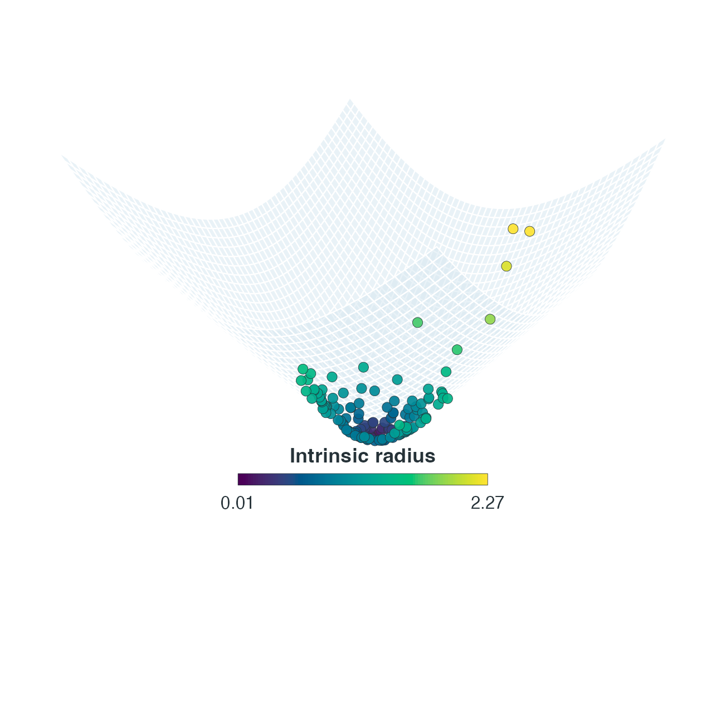
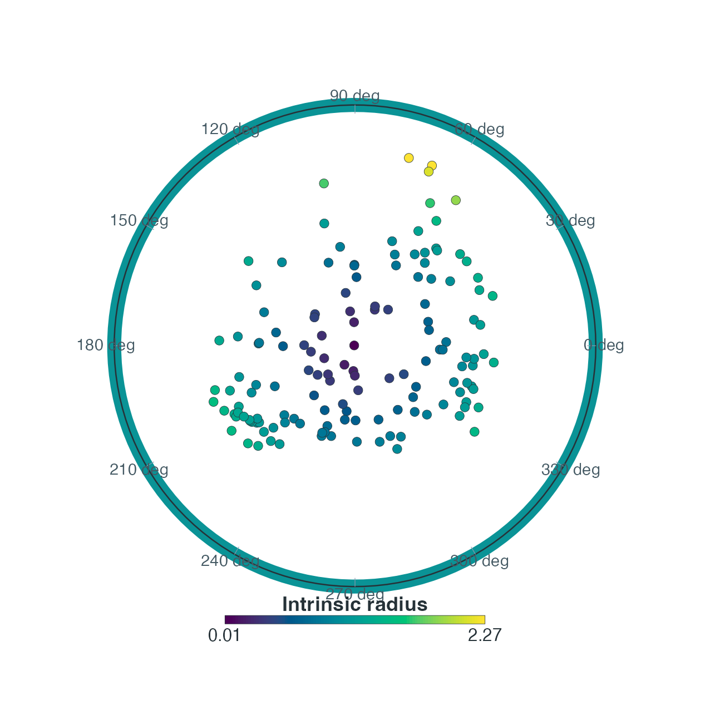
Left: Lorentz hyperboloid. Right: unrescaled Poincare view of the same locations. Both use intrinsic radius for colour. Ordinary Euclidean distances in the disk are not the fitted hyperbolic distances.
plot_lhwr_geometry(Z, type = "radial", title = "", palette = "Viridis")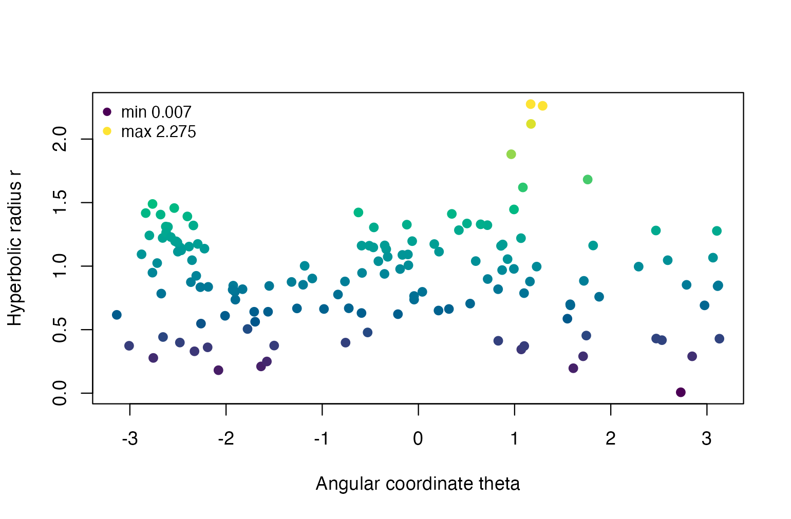
Angular location and intrinsic radius. Angles are representation coordinates, not compass bearings, and radius is not automatically an observed economic variable.
plot(fit, geometry="projection") instead shows the
Lorentz spatial coordinates (z_1,z_2).
It is neither a Poincare map nor longitude and latitude. Use
plot_lhwr_embedding() when a Poincare display with a custom
response, coefficient or diagnostic colour label is required.
Coefficients and significance side by side
We first separate effect magnitude from the uncertainty classification. The slope is in GDP-growth percentage points per one sample SD of unemployment, conditional on internet use. Orange marks raw pointwise evidence only; green marks both raw and coefficient-wise BH-adjusted evidence. Grey means not flagged. These are exploratory conditional coefficient tests.
raw_u <- is.finite(coef_u$p_value) & coef_u$p_value < 0.05
bh_u <- is.finite(coef_u$p_adjusted) & coef_u$p_adjusted < 0.05
coef_class <- factor(ifelse(bh_u, "Raw + BH", ifelse(raw_u, "Raw only", "Not flagged")),
levels = c("Not flagged", "Raw only", "Raw + BH"))
coef_palette <- c("Not flagged" = "#C9C9C9", "Raw only" = "#E69F00",
"Raw + BH" = "#1B7837")
draw_map(values = coef_u$estimate, value_label = "Unemployment slope (pp / SD)")
draw_map(groups = coef_class, group_palette = coef_palette,
group_label = "Coefficient evidence at 0.05")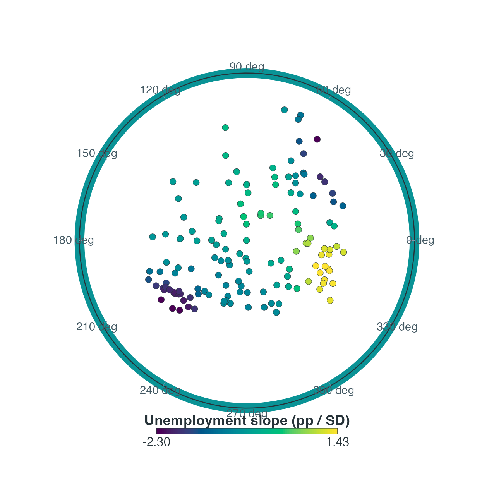
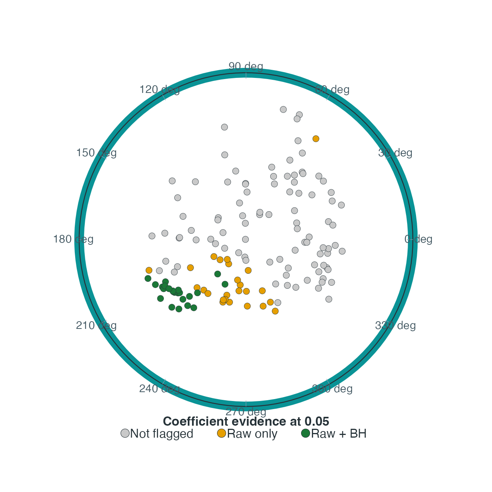
Left: unemployment slope in GDP-growth percentage points per predictor SD. Right: raw and coefficient-wise BH-adjusted local evidence at the same locations. This is coefficient inference, not residual LISA.
Combined coefficient colour and significance rings
In the current map API, supplying significant overrides
numeric fill: it does not automatically overlay rings
on a coefficient colour surface. To reproduce the combined manuscript
convention, draw the numeric map first and add rings using its returned
plotting coordinates. The helper below preserves the map’s graphical
parameters while adding the overlay; it does not refit the model, change
p-values or alter observation positions.
draw_coefficient_rings <- function() {
old <- par(mar = c(1.5, 1.5, 3.5, 1.5), family = "sans", xaxs = "i", yaxs = "i")
on.exit(par(old))
positions <- draw_map(values = coef_u$estimate,
value_label = "Unemployment slope (pp / SD)")
for (flag in c("Raw only", "Raw + BH")) {
i <- which(coef_class == flag)
points(positions$p_x_plot[i], positions$p_y_plot[i], pch = 21,
bg = NA, col = coef_palette[flag], lwd = 1.6, cex = 1.8)
}
legend("topleft", c("Raw only", "Raw + BH"), pch = 21, pt.bg = NA,
col = coef_palette[c("Raw only", "Raw + BH")], pt.lwd = 1.6,
pt.cex = 1.4, cex = 0.75, bty = "n")
invisible(positions)
}
combined_positions <- draw_coefficient_rings()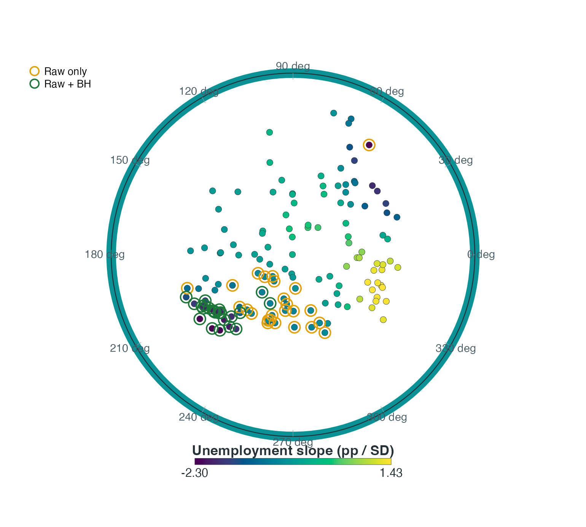
Local unemployment coefficients with raw-only orange rings and raw-plus-BH green rings. Unringed nodes do not meet either classification. Adjustment does not account for representation or bandwidth selection.
Other uncertainty views
draw_map(values = coef_u$se, value_label = "Unemployment SE (pp / SD)")
draw_map(values = coef_u$p_adjusted, value_label = "Adjusted local p-value",
palette = "Inferno")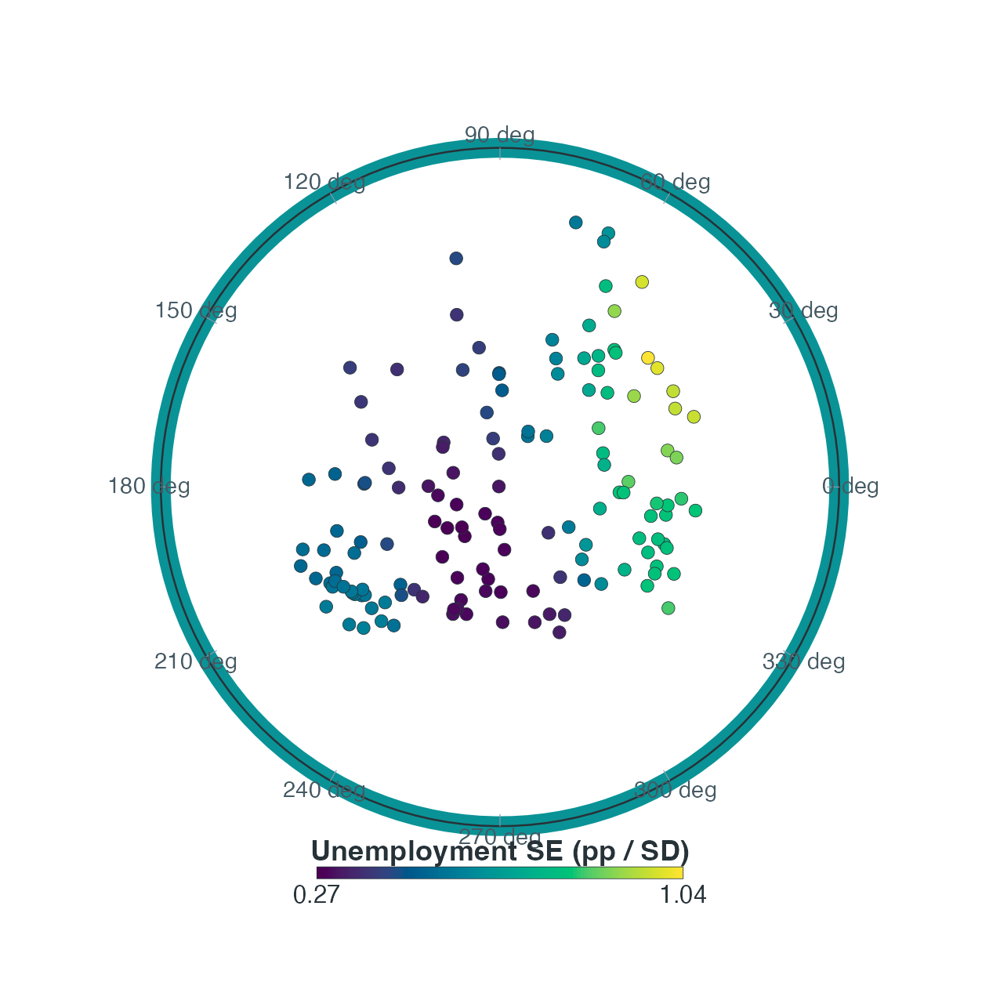
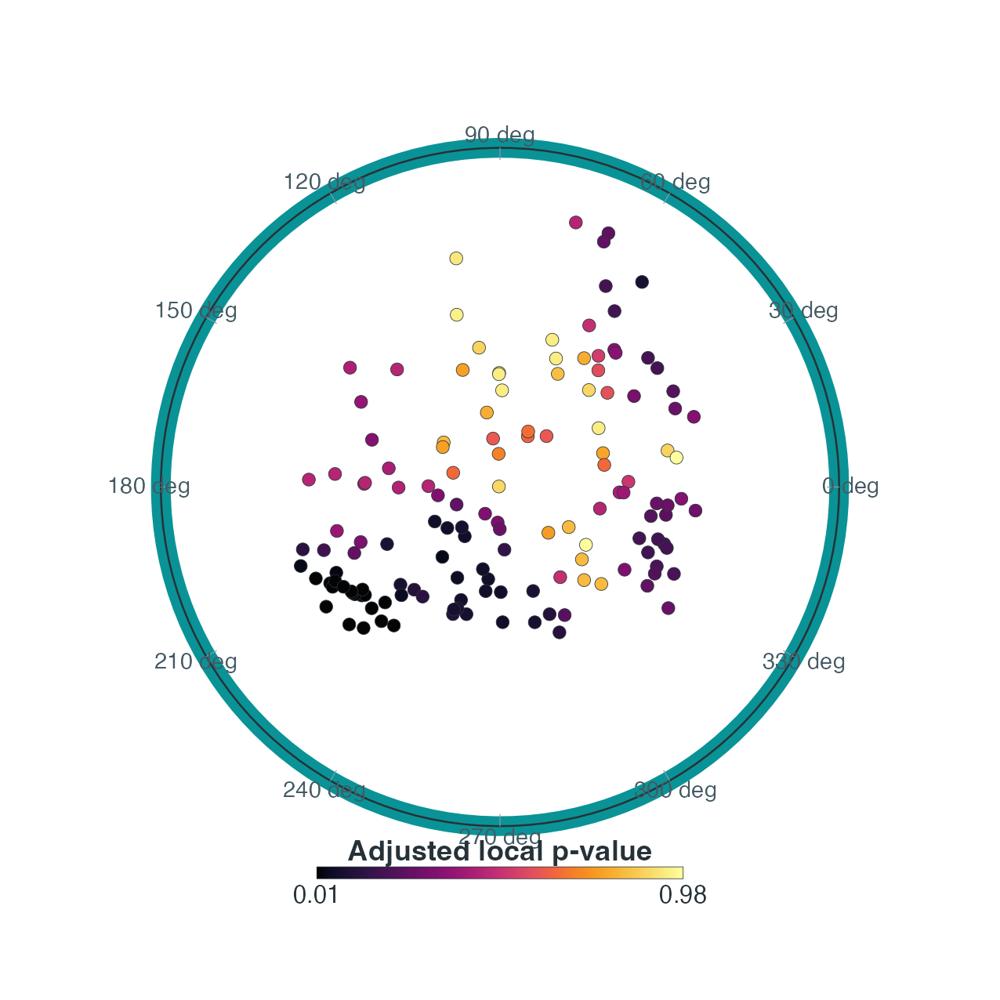
Left: conditional local standard error for the unemployment slope. Right: coefficient-wise BH-adjusted p-values. Standard error describes precision; a p-value is neither effect size nor the probability that a hypothesis is true.
The convenience interface
plot_lhwr_inference(fit, coefficient="unemployment", type="significance")
supplies a direct significance map. It also supports
"p_value" and "p_adjusted". Use the
lower-level map and extracted local_inference() table for
custom labels, rings or a different declared adjustment scope.
Fitted responses and residuals
Fitted responses are calibration values, not predictions for unseen data. Use a diagonal reference in an observed-versus-fitted plot to show departures from agreement. Residual plots locate remaining misfit but do not explain its cause. On the representation, comparisons must reuse the same positions.
draw_map(values = fitted(fit), value_label = "Fitted GDP growth (pp)")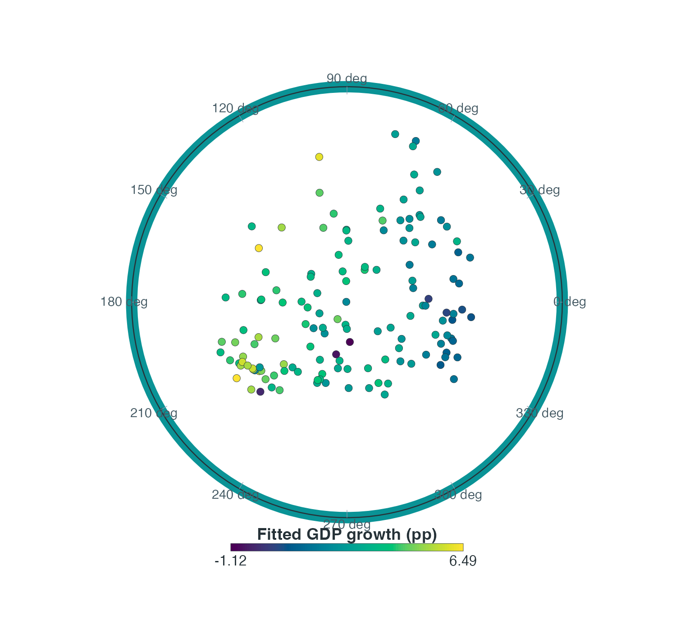
LHWR fitted GDP growth over the economic representation. Colour is the calibrated response in percentage points, not a coefficient or an out-of-sample performance measure.
limits <- range(c(dat$gdp_growth, fitted(fit)))
plot(dat$gdp_growth, fitted(fit), xlim = limits, ylim = limits, asp = 1,
pch = 19, col = "#176B7299", xlab = "Observed GDP growth (pp)",
ylab = "Fitted GDP growth (pp)")
abline(0, 1, lty = 2, col = "grey40")
plot(fitted(fit), residuals(fit), pch = 19, col = "#176B7299",
xlab = "Fitted GDP growth (pp)", ylab = "Residual (pp)")
abline(h = 0, lty = 2, col = "grey40")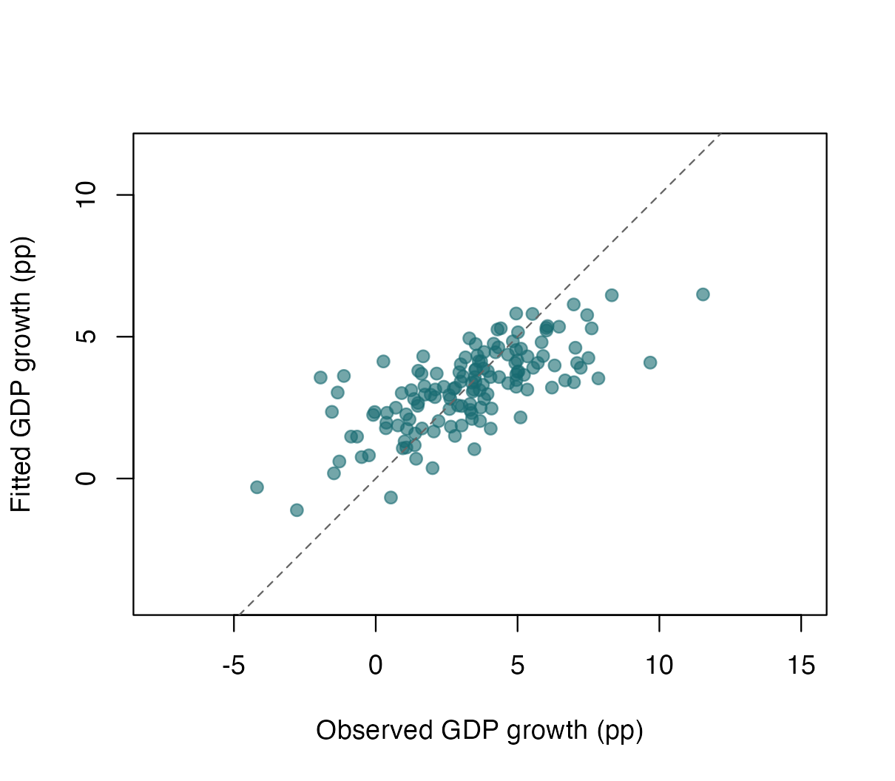
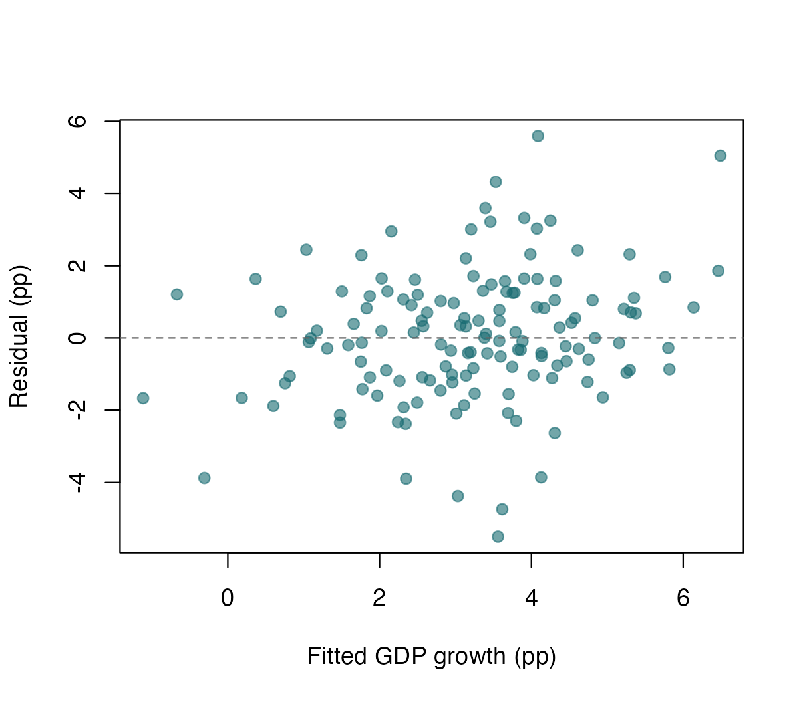
Left: observed versus calibration-fitted GDP growth with the identity line. Right: residuals versus fitted GDP growth with the zero-residual line. Both are calibration diagnostics.
For signed quantities, a diverging palette’s midpoint should not silently be interpreted as zero: the default continuous map rescales to the observed range, which need not be symmetric. This explicit, symmetric display binning anchors the residual map at zero without changing residual values. Use the same breaks and palette for comparable model panels.
bound <- ceiling(max(abs(residuals(fit))))
residual_breaks <- c(-bound, -bound / 2, 0, bound / 2, bound)
residual_classes <- cut(residuals(fit), residual_breaks,
include.lowest = TRUE, right = FALSE)
residual_palette <- setNames(c("#2166AC", "#92C5DE", "#F4A582", "#B2182B"),
levels(residual_classes))
draw_map(groups = residual_classes, group_palette = residual_palette,
group_label = "Residual interval (pp)")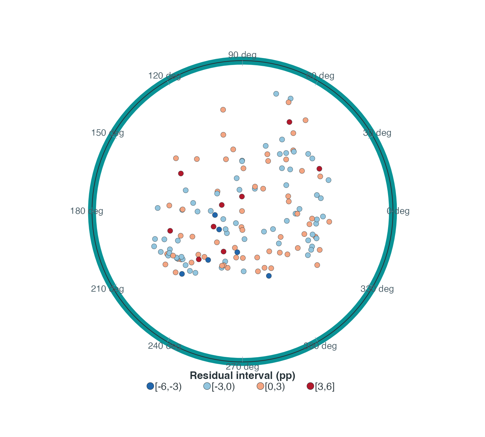
Residuals in symmetric intervals around zero. Negative means the calibrated response exceeds the observed response; positive means the reverse. Binning changes the display only.
An error-improvement map is possible when aligned reference-model fitted values already exist. For y_i observed and calibration fits \widehat y_{i,\mathrm{ref}}, \widehat y_{i,H}, define \Delta_i=|y_i-\widehat y_{i,\mathrm{ref}}|-|y_i-\widehat y_{i,H}|. Positive values favour LHWR in absolute fitted error; negative values favour the reference. This contrast is not a significance test or held-out improvement. Do not hide negative values or change models to obtain a desired colour pattern. No additional comparison model is fitted in this gallery.
Local fit quality and estimability
lc <- local_collinearity(fit)
draw_map(values = lc$condition_number$local_CN, value_label = "Local condition number",
palette = "Inferno")
draw_map(values = fit$local_neff, value_label = "Effective local sample size")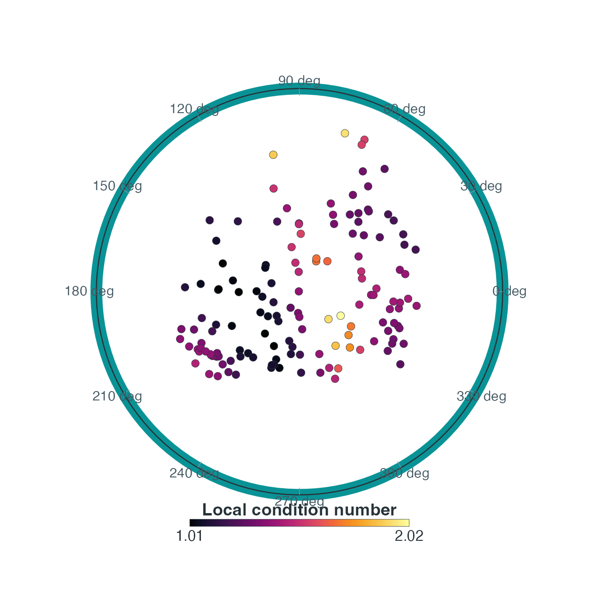
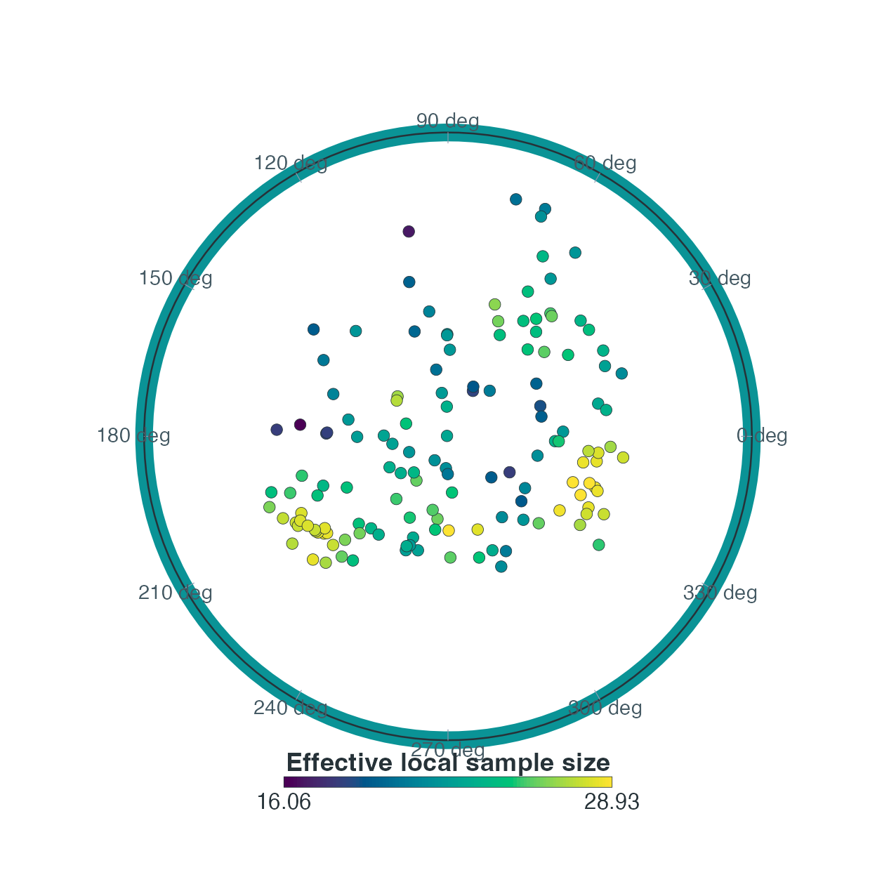
Left: local weighted design condition number; larger values warn of near-collinearity, not curvature failure. Right: effective local sample size accounting for uneven weights, distinct from the bandwidth neighbour count.
plot_lhwr_diagnostics(fit, type = "local_r2")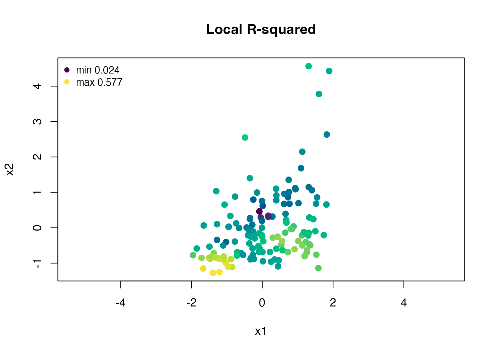
Local R-squared from the fitted object. It is a neighbourhood fit diagnostic, not an out-of-sample R-squared or a causal explanation measure.
The last convenience plot uses the Lorentz spatial-coordinate
projection; its axes deliberately differ from the disk maps. To retain
disk geometry, pass fit$SDF$Local_R2 to
draw_map(values=...) after checking availability. Always
inspect nonfinite diagnostics instead of silently colouring them as
ordinary values. plot_lhwr_model() additionally supports
"se" and "t_value" for named coefficients.
Moran and LISA: global context and local residual outliers
mi <- moran.lhwr(fit, distance = "lorentz", kernel = "bisquare", k = bw$bw,
row_standardize = TRUE, permutations = 99, seed = 20260714)
lisa <- local_moran.lhwr(fit, distance = "lorentz", kernel = "bisquare", k = bw$bw,
row_standardize = TRUE, permutations = 99, seed = 20260714)
lisa_palette <- c("Not Significant" = "#BDBDBD", "High-High" = "#D7191C",
"Low-Low" = "#2C7BB6", "Low-High" = "#7B3294", "High-Low" = "#E69F00")
lisa_labels <- ifelse(lisa$cluster_type == "Not Significant", "", wdi$iso3)
draw_map(groups = lisa$cluster_type, group_palette = lisa_palette,
group_label = "Raw residual LISA class", labels = lisa_labels)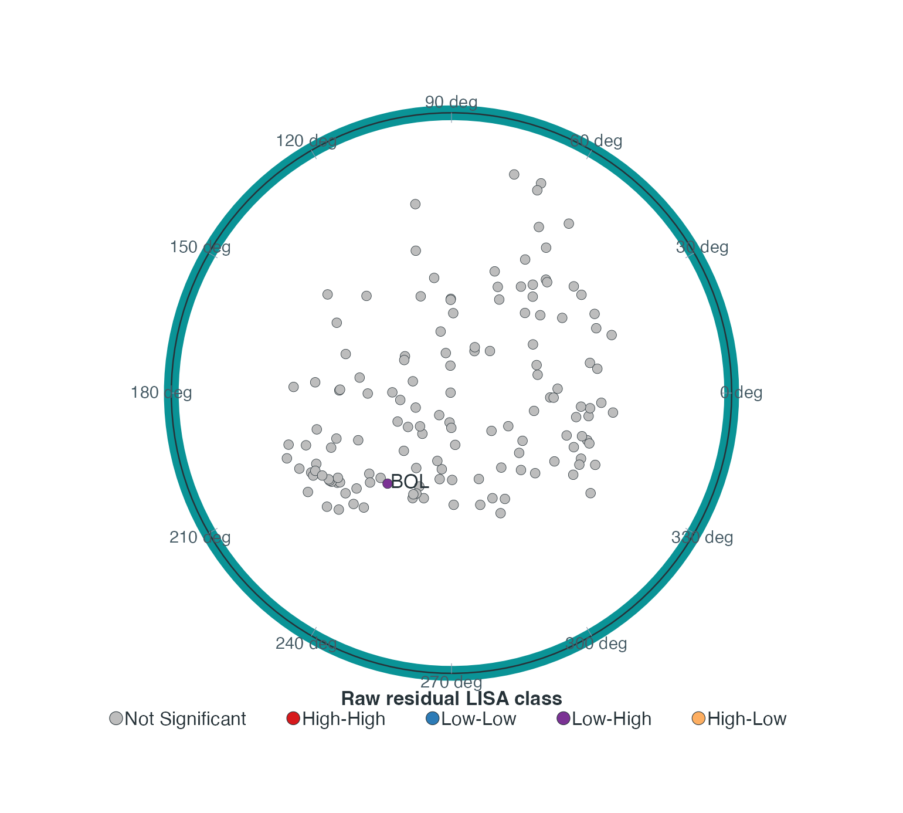
Residual LISA classes over the same economic representation. Only flagged countries are labelled. High and low refer to centred residuals and their weighted lags; colours do not represent coefficient significance. Raw local p <= 0.05, 99 full-vector permutations, seed 20260714.
This tutorial displays the map to teach the interface even when only one country is flagged. A manuscript need not include a mostly uniform map: reporting the local statistic, country, raw p-value and diagnostic settings in text may be clearer. A Low–High location is a discordant residual outlier, not a positive residual cluster.
residual_scale <- sqrt(mean(lisa$residual_centered^2))
z <- lisa$residual_centered / residual_scale
lag_z <- lisa$spatial_lag / residual_scale
plot(z, lag_z, pch = 19, col = lisa_palette[as.character(lisa$cluster_type)],
xlab = "Centred residual / RMS", ylab = "Weighted residual lag / RMS")
abline(h = 0, v = 0, lty = 3, col = "grey65")
abline(0, sum(z * lag_z) / sum(z^2), col = "#176B72", lwd = 2)
text(z, lag_z, labels = lisa_labels, pos = 4, cex = 0.75)
hist(mi$permuted_I, breaks = "FD", col = "#B6DADB", border = "white",
main = "", xlab = "Permuted global Moran I",
xlim = range(c(mi$permuted_I, mi$I)))
abline(v = mi$I, col = "#B2182B", lwd = 2)
legend("topright", sprintf("Observed I = %.3f; raw p = %.3f", mi$I, mi$p_value),
col = "#B2182B", lwd = 2, bty = "n", cex = 0.75)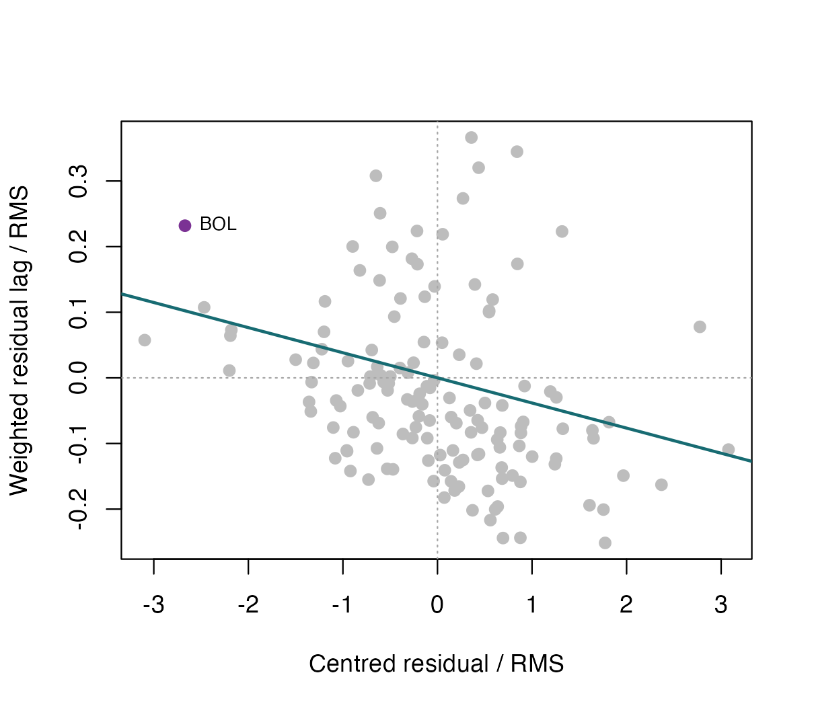
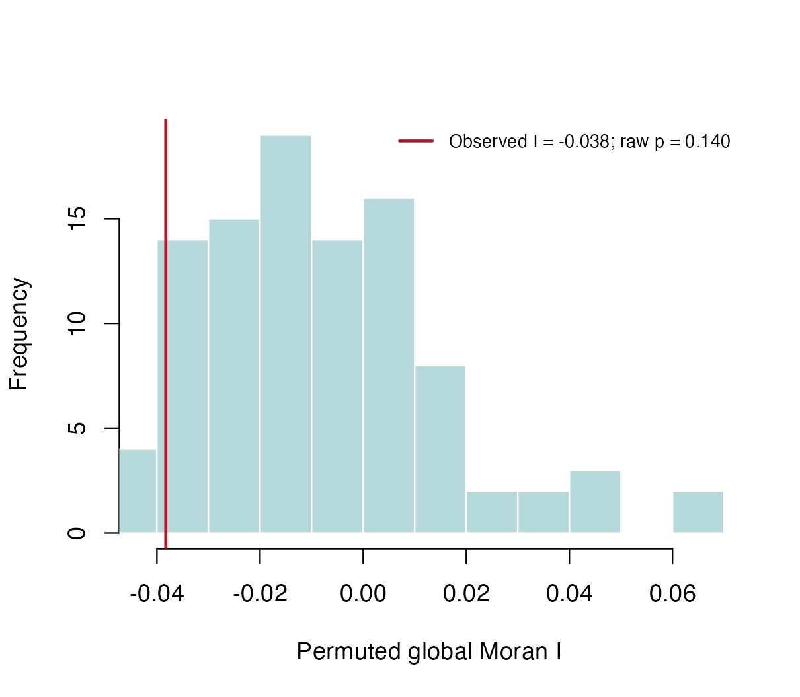
Left: centred residuals and weighted lags, divided by residual RMS, with through-origin association. Right: global Moran permutation distribution and observed statistic. These are descriptive fitted-residual diagnostics, not exact post-selection tests.
The default plot(lisa) shows local Moran values by
observation index, not a map and not this Moran scatterplot. A different
classification threshold requires reclassifying from the stored residual
and lag signs. For example, the following computes a separate
BH-adjusted display table without replacing the original raw
classifications:
lisa_display <- as.data.frame(lisa)
lisa_display$p_BH <- p.adjust(lisa_display$p_value, method = "BH")
flag_BH <- is.finite(lisa_display$p_BH) & lisa_display$p_BH <= 0.05
lisa_display$class_BH <- as.character(lisa_display$cluster_type)
lisa_display$class_BH[!flag_BH] <- "Not Significant"
knitr::kable(data.frame(Rule = c("Raw p <= 0.05", "BH-adjusted p <= 0.05"),
Flagged = c(sum(lisa$p_value <= 0.05, na.rm = TRUE), sum(flag_BH))),
caption = "Two explicitly different exploratory display rules, not two new fitted models.")| Rule | Flagged |
|---|---|
| Raw p <= 0.05 | 1 |
| BH-adjusted p <= 0.05 | 0 |
BH-adjusted p-values cannot validate the underlying fitted-residual
permutation law. For a larger raw alpha threshold, rebuild all four
classes from residual_centered and
spatial_lag; simply filtering the existing 5% classes would
miss newly eligible locations.
Overlay a network without changing the model
The next example constructs a display-only
three-neighbour graph in the existing Lorentz representation. It is not
observed trade data and is not an additional regression input. In an
actual network application, replace edges with the observed
edge list aligned to node_id.
D <- hyperbolic_distance_matrix(Z, check = FALSE)
diag(D) <- Inf
near <- t(apply(D, 1, function(d) order(d)[1:3]))
edges <- unique(data.frame(from = rep(seq_len(nrow(Z)), each = 3),
to = as.vector(t(near))))
plot_lhwr_network_map(Z, edges = edges, values = fitted(fit),
node_id = wdi$iso3, labels = rep("", nrow(Z)),
value_label = "Fitted GDP growth (pp)", radial_rescale = FALSE,
title = NULL, show_info = FALSE, show_size_legend = FALSE,
background_col = "white", point_palette = "Viridis", plot_control = map_control)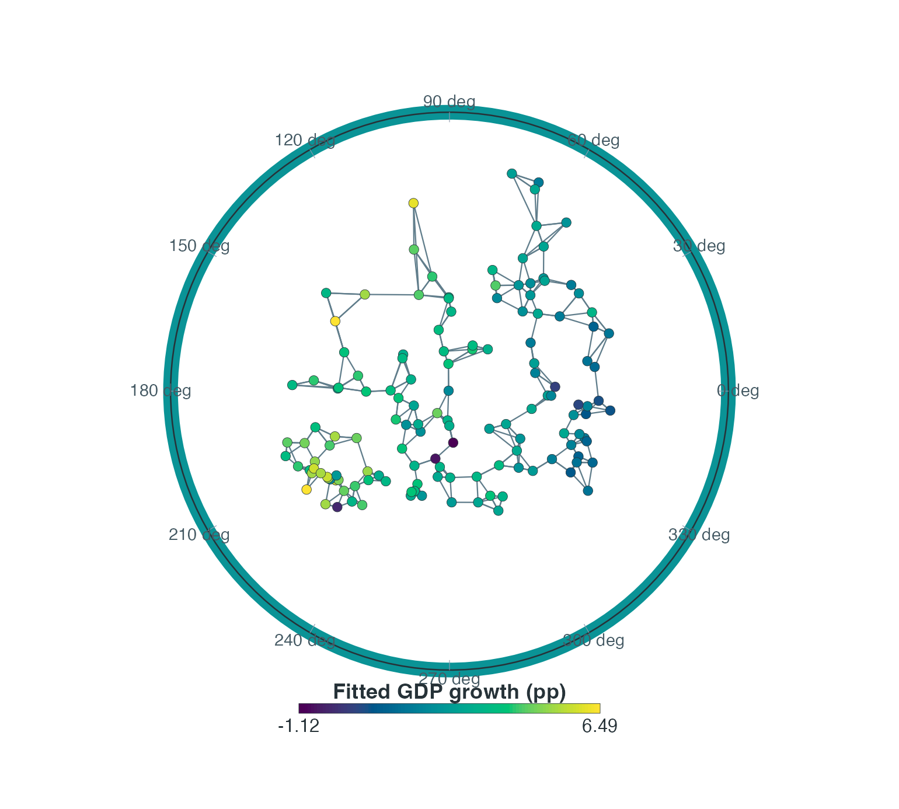
Fitted GDP growth with an illustrative three-neighbour graph overlaid. These edges come from representation distances, not recorded trade links, and were not used to refit the model.
edge_weight, edge_alpha_range and
edge_lwd_range control edge emphasis. groups
can encode known communities when no numeric fill is supplied.
sizes can encode a nonnegative node attribute; the map
already applies log1p before rescaling point size. Supply
the original attribute unless a second transformation is explicitly
intended, and state that visual size is transformed. Equal-size nodes,
as above, avoid introducing another variable.
Export figures without overwriting results
This local helper supports PDF and PNG. Width and height are in
inches; res controls PNG pixels per inch. For example, 7
inches at 300 dpi produces 2100 pixels. PDF is vector where the graphics
device supports it. Check the chosen journal’s actual specifications;
300 or 600 dpi here are export options, not a claim about every
journal’s requirements.
save_lhwr_figure <- function(path, draw, width = 7, height = 6.3, res = 300) {
stopifnot(is.function(draw), dir.exists(dirname(path)))
if (file.exists(path)) stop("Refusing to overwrite: ", path)
ext <- tolower(tools::file_ext(path))
if (ext == "pdf") {
grDevices::pdf(path, width = width, height = height, useDingbats = FALSE)
} else if (ext == "png") {
grDevices::png(path, width = width, height = height, units = "in", res = res)
} else stop("Use a .pdf or .png extension.")
on.exit(grDevices::dev.off())
draw()
invisible(path)
}Choose a new output directory rather than replacing an earlier figure set:
figure_dir <- file.path(tempdir(), "lhwr_figures_v01")
if (dir.exists(figure_dir)) stop("Choose a new figure directory.")
dir.create(figure_dir)
save_lhwr_figure(file.path(figure_dir, "unemployment_rings.pdf"), draw_coefficient_rings)
save_lhwr_figure(file.path(figure_dir, "unemployment_rings.png"),
draw_coefficient_rings, res = 600)The built-in map’s output_file also supports
PDF/EPS/PNG. Its width and height are
pixels, with PDF/EPS physical size obtained by dividing
by res; plot_lhwr_hyperboloid() instead uses
inches. Do not copy dimensions between these interfaces without
converting units. Plot functions can overwrite files; the wrapper above
deliberately refuses that.
Keep a figure’s settings with its output: country/node order,
selected coefficient, units, colour range or breaks, geometry view, any
radial display rescaling, size transformation, raw/adjusted
classification rule and seed. Use summary() and
caption_lhwr_map() on returned map objects as aids, then
review the caption for overlays added afterwards: automatic metadata
cannot describe significance rings drawn by separate
points() calls. Use one legend for one encoding, and
explain interpretation in the caption and results text rather than
repeating a large instruction box on the plot.
packageVersion("LHWL")
#> [1] '0.3.1'